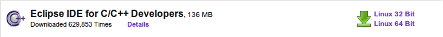
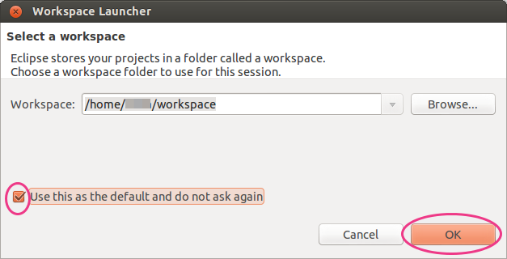
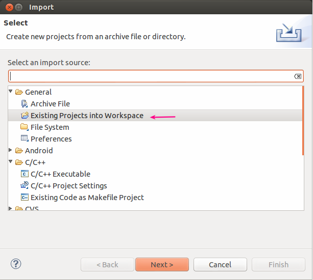
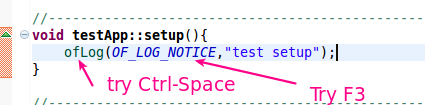
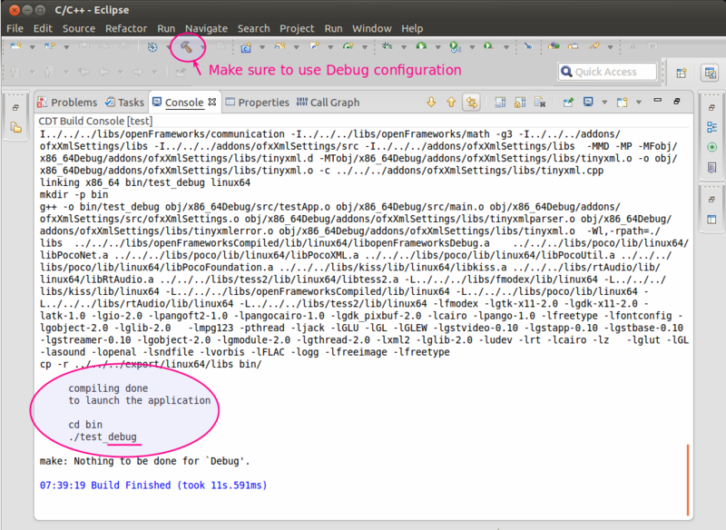
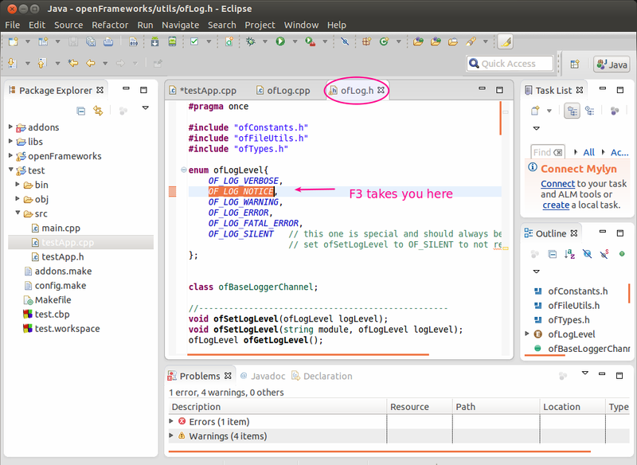
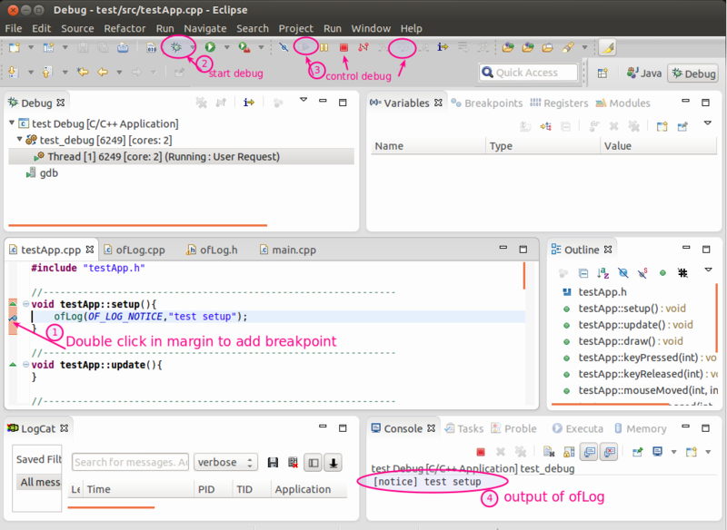

linux eclipse
Before using OF in linux you need to run some install scripts, follow the instructions here if you haven't done so yet.
Note: see the FAQ at the bottom of this page if you're having trouble.
This guide describes how to get started with openframeworks using Eclipse as IDE. Eclipse is very powerful, however it is a complex and somewhat resource heavy environment. Since version 0.9.0 Qt Creator is the recomended IDE.
This guide was tested on Ubuntu 15.10 64 bit installation with Eclipse Mars and the openFrameworks version 0.9.0 for 64bit.
To use it you will need Eclipse for C++ and openframeworks.
Summary
The main steps are:
- Install Eclipse.
- Download openFrameworks either from the download page, or clone from git.
- Install the openFrameworks plugin for eclipse
- Import the openFrameworks projects into Eclipse.
- Create a new project.
- Add addons
- Add some code to the new project to check that code complete works.
- Debug the new project to check that debug build works.
Installation
a) Eclipse: Download the C/C++ edition for your platform from the downloads section on the Eclipse website.

These instructions currently use Eclipse Mars
There are installation instructions on the eclipse site. It's recomended to use the Oracle version of Java with eclipse. The Java installation instructions for ubuntu referenced on this page are old and for this installation these instructions were used. For more ubuntu specific information on how to install eclipse look at the this question and answer and an this page which shows where to put executables and how to make a launch icon.
b) openFrameworks for linux package: Download it from the openFrameworks downloads page.
You may also check out the openFrameworks source from GitHub (under master branch).
- in the scripts/linux folder inside the openFrameworks package you will find a directory with the name of your distribution. There are 2 scripts, install_dependencies.sh and install_codecs.sh. You need to run at least install_dependencies.sh and install_codecs.sh will install support for some formats like h264 and mp3. Don’t execute them from the desktop, as they needs root privileges to run, you will need to run them from a terminal. You can execute it more than once without problem if something goes wrong. If you update your openFrameworks version, execute install_dependencies.sh script again. If you are using the tar-zipped downloaded version of openframeworks, at this point, you should be able to build the examples using the makefile from the command line. If you are using the GitHub version you will have to generate the example projects using projectGenerator or copy the Makefile and config.make from the template if you want to run them.
On Ubuntu the exact steps are as follows:
Ubuntu:
-
open a terminal. If you are using unity click on the Dash icon and type term then choosing the appropriate application.
-
in the terminal go to the directory where your openFrameworks package is.
-
ie. if your user name is ofuser and you have uncompressed the oF package in the desktop it should be something like:
cd /home/ofuser/Desktop/of_v0.9.0_linux64_release/scripts/linux/ubuntu -
once in this directory run the scripts with:
sudo ./install_dependencies.sh -
to check if the example works with a make file, go to the example directory and type make.
-
ie. if your user name is ofuser and you have uncompressed the oF package in the desktop try the following commands:
cd /home/ofuser/Desktop/of_v0.9.0_linux64_release/examples/graphics/polygonExample make cd bin ./polygonExample
c) Start Eclipse:
Depending on where you installed eclipse you can start it from the terminal or if you made a launcher icon start it from there. The terminal command may look like this:
cd /home/ofUser/apps/eclipse
./eclipse
You will see a pop up asking you what workspace to use. Just point it to the default, the openframeworks projects will not end up in this workspace. 
d) Import openFrameworks into Eclipse:
File > Import and select General > Existing projects in the workspace...

Then import openFrameworks/libs/openFrameworks.
e) Install the openFrameworks eclipse plugin
From Help > Install New Software. Add a new repository by pressing the Add button. Set the name to openFrameworks plugin and the URL to http://openframeworks.cc/plugins/eclipse
Select the openFrameworks plugin, accept the license and then install, while installing it'll ask to also accept the digital signature for the plugin. Once installed you'll need to restart Eclipse.
f) Create a Test project
From File > New > Project... select C/C++ > openFrameworks and there openFrameworks application.
You can create a new openFrameworks application or update an existing one just by pointing the path to an existing project. By pressing next you can select the addons to include in the project. Pressing Finish will create the project and compile it. Compiling the project right away after creating it allows eclipse to parse the output of the compiler getting a much better autocompletion.
g) Add code to the your new project
Add some code to the project. In this step you can test if code completion works with Ctrl-Spacebar. e.g. type ofL Ctrl-Space and see if the ofLog method is displayed. You can also see if Eclipse will jump to the declaration of a method or constant by pressing F3 or Ctrl+Left mouse. Compile the code using the Hammer icon. For this example I added a log message to the setup method in the ofApp.cpp file. Make sure you choose the Debug configuration under the arrow of the Hammer.
  
h) Run and debug the test project
Activate a breakpoint in the new code by Right-click in the margin and choosing Toggle Breakpoint or double clicking in the margin. Press the green bug toolbar icon to run in debug mode. The debugger should break at your breakpoint. Use the debug controls to continue or step into the code.

i) Add addons to a project
You can add addons to an existing project through the contextual menu of a project, Right click on an openFrameworks project, select Properties > openFrameworks and add or remove any addons. After adding an addon is recommended to rebuild the index by selecting Index > Rebuild in the contextual menu of the project.
Notes
-
Data files should go in bin/data.
-
Sometimes there are unresolved symbols which look like bugs, red squiggles. The project still compiles and runs correctly. This happens if Eclipse is confused about which symbols it should use.
-
You can see the output of the compiler and of the ofLog commands in the Console tab.
FAQ
-
If nothing happens when you click on the green bug to debug, you may have to choose organise favourites from the green bug arrow and add your test project configuration.
-
If you can't set a breakpoint, check carefully where in the margin you are clicking. The click target isn't all that large.
-
Sometimes it helps to refresh the symbols by Right clicking on the project and choosing Index > Rebuild
Monday, 04 January 2016 10:11:06 UTC
에 마지막으로 업데이트됨 -
f66617028b8684e2762593d5fcb0e2945d487196
hosting for openFrameworks.kr is provided by icq4ever@gmail.com